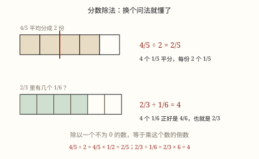
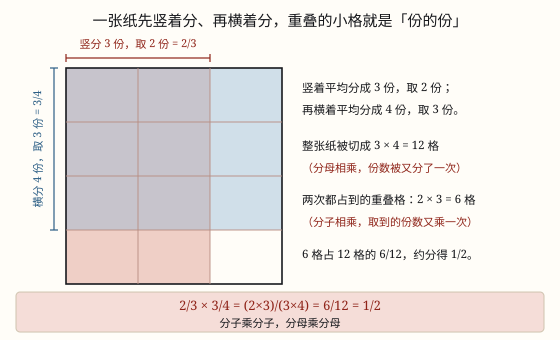

分数乘法与分数除法的算理
分数乘分数，分子乘分子、分母乘分母；道理藏在「一张纸先竖着分、再横着分」的面积模型里。
| 所属主题 | 数的运算 |
|---|---|
| 所属模块 | 数与代数 |
| 课标学段 | 第三学段（5~6年级） |
| 前置知识 | 分数的意义与基本性质、分数的意义与基本性质 |
| 核心素养 | 运算能力几何直观推理意识数感 |
教材定位
人民教育出版社《2024年版》
对应六上第 2 单元「分数乘法」：分数乘整数、分数乘分数与倒数。；对应六上第 3 单元「分数除法」：分数除以整数、分数除以分数与已知一个数的几分之几是多少。
课标要求
| 数与代数·数与运算 | 能进行简单的小数、分数四则运算和混合运算，感悟运算的一致性，发展运算能力和推理意识。 印刷第 24 页 行为动词：掌握 |
|---|---|
| 数与代数·数与运算 | 结合具体情境探索并理解小数和分数的意义，感悟计数单位；会进行小数、分数的转化，进一步发展数感和符号意识。 印刷第 23 页 行为动词：理解 |
| 数与代数·数与运算 | 结合具体情境理解整数除法与分数的关系（例16）。 印刷第 23 页 行为动词：理解 |
说明
分数乘法分两种。一种是整数乘分数：3 × 2/5 就是 3 个 2/5 相加，等于 6/5，整数只和分子相乘，分母不变。另一种是分数乘分数：2/3 × 3/4 读作「2/3 的 3/4 是多少」，是「一份的几分之几」，也就是份的份。
分数乘分数的法则：分子乘分子做分子，分母乘分母做分母，写作 a/b × c/d = a × c/b × d（b、d 都不为 0）。比如 2/3 × 3/4 = 2 × 3/3 × 4 = 6/12 = 1/2。
为什么是「乘」而不是「加」？因为取了一次还要再取一次。先把整张纸竖着分成 3 份、取 2 份；再在这 2 份里横着分成 4 份、取 3 份。份数被又分了一次，所以分母相乘；取到的份数也被又乘了一次，所以分子相乘。图 1 里重叠的深色小格，就是两次都取到的地方。
算的时候有个窍门：能约分先约分。2/3 × 3/4 里两个 3 可以先约掉，2 和 4 约成 1 和 2，直接得 1/2，比算出 6/12 再约简单得多。最后的结果一定要写成最简分数。
（分数除法的算理）
先认识倒数：乘积是 1 的两个数互为倒数。3/4 的倒数是 4/3，因为 3/4 × 4/3 = 1；整数 5 可以看成 5/1，它的倒数是 1/5；1 的倒数还是 1。0 没有倒数，因为 0 乘任何数都得 0，永远乘不出 1。
分数除法的法则：除以一个数（0 除外），等于乘这个数的倒数，写作 a/b ÷ c/d = a/b × d/c（c 不为 0）。比如 3/4 ÷ 2/5 = 3/4 × 5/2 = 15/8。
这条法则不是天上掉下来的。它的核心是商不变的规律：被除数和除数同时乘一个相同的数（0 除外），商不变。要算 3/4 ÷ 2/5，就给被除数和除数都乘 5/2，除数 2/5 × 5/2 正好变成 1，除以 1 不改变大小，剩下的就是 3/4 × 5/2。倒数的用处，就是把除数变成 1。
换个角度也能看明白：除法有两种意思，一种是「平均分」，一种是「包含除」。3/4 ÷ 1/8 问的是「3/4 里面有几个 1/8」。3/4 = 6/8，里面有 6 个 1/8，而 3/4 × 8 = 6——除以 1/8 就是乘 8，正好是乘它的倒数。
0 不能作除数有两层原因：一是 0 没有倒数，法则本身就走不通；二是从除法的意义看，要找「0 乘几等于被除数」，可 0 乘任何数都得 0，商根本定不下来。
使用场景
班级图书角：故事书占全部图书的 3/5，故事书里又有 1/4 是科普故事，科普故事占全部的几分之几，就要用分数乘法。
分披萨、分蛋糕：一个披萨，小明吃了整个的 2/3，小红吃的又是小明那份的 3/4——小红吃了整个披萨的几分之几？这就是分数乘法。
手工课和做窗帘：一匹布先用去 3/4，做桌布又用去剩下部分的 2/5，各用多少米，都要先求「一个数的几分之几」。
体育训练：操场一圈 400 米，跑了 5/8 圈，其中 4/5 是快跑，快跑多少米，同样是分数乘法。
（分数除法的算理）
分饮料、分果汁：一瓶 3/4 升果汁，每杯 1/8 升，能倒几杯，就是求「里面有几个」，用除法。
手工课分材料：2/3 米彩带，每段剪 1/6 米，能剪几段，也是分数除法。
已知部分求整体：买笔记本用去零花钱的 2/5，正好 8 元，求零花钱总数，要用 8 除以 2/5。
算速度、算单价：3/4 小时骑了 9/2 千米，1 小时骑多少千米，用路程除以时间。
注意点
分子乘分子、分母乘分母，不要交叉相乘。2/3 × 3/4 得 2 × 3/3 × 4，不是 2 × 4/3 × 3。交叉相乘是以后解比例用的，别提前搬过来。
分数乘整数，整数只乘分子。2/3 × 3 = 2 × 3/3 = 2，不是 2/3 × 3。
带分数先化成假分数再乘。11/2 × 2/3 要先把 11/2 化成 3/2，不能整数部分、分数部分分开乘。
结果必须最简。算出 6/12 要写成 1/2；能先约分的先约分，数字小、不容易错。
积不一定比因数大。乘一个真分数（小于 1），积反而变小：2/3 × 3/4 = 1/2，1/2 比 2/3 小。
（分数除法的算理）
只把除数颠倒，被除数不动。3/4 ÷ 2/5 变成 3/4 × 5/2，不是 4/3 × 2/5。
整数也有倒数。3/4 ÷ 2 中的 2 要看成 2/1，倒数是 1/2，所以等于 3/4 × 1/2 = 3/8，绝不是乘 2。
0 没有倒数，0 不能作除数。遇到除数是 0 的式子，直接说「没有意义」，不要硬算。
除号变乘号后，能约分先约分，结果写成最简分数；带分数要先化成假分数再取倒数。
商不一定比被除数小。除以一个小于 1 的数，商反而变大：3/4 ÷ 1/8 = 6。

图 1：换成「平均分成几份」「里面有几个」，就好懂了
为什么是这样

图 1：竖着取一份、横着再取一份，重叠的小格就是「份的份」
算理推导
把一张正方形纸看作单位「1」。它的面积就是 1，后面所有的份都在这张纸上切。
第一步竖着切：平均分成 3 份，把左边 2 份涂成浅红色。这 2 份占整张纸的 2/3。
第二步横着切：把整张纸平均分成 4 份，把上面 3 份涂成浅蓝色。这 3 份占整张纸的 3/4。
两次一切，整张纸被切成了 3 × 4 = 12 个小格——这就是分母相乘的来历：份数被又分了一次。
再看重叠：浅红色占 2 列，浅蓝色占 3 行，重叠部分是 2 × 3 = 6 个小格——这就是分子相乘的来历：取到的份数又被乘了一次。
重叠的 6 格占全部 12 格的 6/12，约分得 1/2。它表示的正是「2/3 的 3/4」，所以 2/3 × 3/4 = 2 × 3/3 × 4 = 1/2。
（分数除法的算理）
先看最简单的：3/4 ÷ 2。把 3/4 平均分成 2 份，每份是 3/8；而 3/4 × 1/2 也等于 3/8。两者一样，说明「除以 2」确实等于「乘 1/2」。
再看除以分数。要用到一个老规律——商不变的规律：被除数和除数同时乘一个相同的数（0 除外），商不变。这个规律在整数除法里就学过，对分数同样成立。
要算 3/4 ÷ 2/5，目标是把除数 2/5 变成 1。给被除数和除数同时乘 5/2：除数变成 2/5 × 5/2 = 1，被除数变成 3/4 × 5/2。
因为商不变，原式 = ≤ft(3/4 × 5/2) ÷ 1。任何数除以 1 还是它自己，所以结果就是 3/4 × 5/2 = 15/8。
把数字换成字母再看一遍：a/b ÷ c/d，给被除数和除数同乘 d/c，除数变成 1，于是等于 a/b × d/c。这就是「除以一个数等于乘它的倒数」的来历，倒数的作用就是把除数化成 1。
用「包含除」再核对一次：3/4 ÷ 1/8 是问 3/4 里有几个 1/8。3/4 = 6/8，有 6 个，而 3/4 × 8 = 6，两种算法对得上。
最后看 0：如果除数是 0，就要找「0 乘几等于被除数」，可 0 乘任何数都是 0，商定不下来；0 也没有倒数，d/c 在 c = 0 时根本写不出来。所以 0 不能作除数。
动手实验
拿一张长方形纸，先竖着对折出 3 等份、涂出 2 份，再横着折出 4 等份、涂出 3 份。数一数：一共被折出多少个小格（12 个），两种颜色重叠的有多少格（6 个）。把重叠格数写在分子、总格数写在分母，得到 6/12，约分后是 1/2。再换 3/5 × 2/3 折一次，验证是不是 6/15 = 2/5。 （分数除法的算理） 准备 3 条一样长的纸条，每条都涂出 3/4。第一条平均折成 2 份，量一量每份是 3/8；第二条用 3/4 × 1/2 算，看结果一样不一样。再用一张画好 1/8 小格的纸去量 3/4，数出一共 6 格，和 3/4 × 8 = 6 对照，体会「除以几分之一就是乘几」。
按场景的例题
例 1（场景：校园生活） 班级图书角的藏书
图书角有 120 本书，故事书占 3/5，故事书里有 1/4 是科普故事。科普故事有多少本？
解：先求故事书：120 × 3/5 = 72（本）；再求科普故事：72 × 1/4 = 18（本）。也可以一次算：120 × ≤ft(3/5 × 1/4) = 120 × 3/20 = 18。
答：科普故事有 18 本。
例 2（场景：饮食与配比） 分吃一个披萨
一个披萨，小明吃了整个的 2/3。小红吃的是小明那份的 3/4，小红吃了整个披萨的几分之几？
解：2/3 × 3/4 = 2 × 3/3 × 4 = 6/12 = 1/2。先约分更快：3 和 3 约掉，2 和 4 约成 1 和 2，得 1/2。
答：小红吃了整个披萨的 1/2。
例 3（场景：工程建造） 给教室做窗帘和桌布
一匹布长 20 米，做窗帘用去它的 3/4，做桌布又用去剩下部分的 2/5。做桌布用了多少米？
解：窗帘用去 20 × 3/4 = 15（米），剩下 20 - 15 = 5（米）；桌布用去 5 × 2/5 = 2（米）。
答：做桌布用了 2 米。
例 4（场景：上学日常） 体育课的跑步训练
操场一圈 400 米。小华跑了 5/8 圈，小丽跑的是小华的 4/5。小丽跑了多少米？
解：小华跑了 400 × 5/8 = 250（米）；小丽跑了 250 × 4/5 = 200（米）。合起来算：400 × ≤ft(5/8 × 4/5) = 400 × 1/2 = 200。
答：小丽跑了 200 米。
例 5（场景：计量与估算） 分一瓶果汁
一瓶果汁有 3/4 升，每杯倒 1/8 升，一瓶能倒几杯？
解：3/4 ÷ 1/8 = 3/4 × 8 = 6（杯）。也可以想：3/4 = 6/8，里面有 6 个 1/8。
答：能倒 6 杯。
例 6（场景：农业生产） 手工课剪彩带
一条彩带长 2/3 米，每段剪 1/6 米，可以剪成几段？
解：2/3 ÷ 1/6 = 2/3 × 6 = 4（段）。
答：可以剪成 4 段。
例 7（场景：购物消费） 零花钱买笔记本
买一本笔记本用去零花钱的 2/5，正好是 8 元。零花钱一共有多少元？
解：已知一个数的 2/5 是 8，求这个数，用除法：8 ÷ 2/5 = 8 × 5/2 = 20（元）。验算：20 × 2/5 = 8。
答：零花钱一共有 20 元。
例 8（场景：行程出行） 周末骑车去公园
小宇 3/4 小时骑了 9/2 千米，他平均每小时骑多少千米？
解：速度 = 路程 ÷ 时间：9/2 ÷ 3/4 = 9/2 × 4/3 = 6（千米/时）。
答：平均每小时骑 6 千米。
常用推论
乘法交换律、结合律、分配律对分数同样适用：a × b = b × a，(a × b) × c = a × (b × c)，(a + b) × c = ac + bc。所以 2/3 × 3/4 可以先交换再约分。
积不变的规律：一个因数乘几，另一个因数除以相同的数（0 除外），积不变。约分就是靠它把分子分母同时缩小再相乘。
因数 × 因数 = 积；积 ÷ 一个因数 = 另一个因数。算完可以用除法验算：1/2 ÷ 3/4 = 2/3，正好回到原来的因数。
工作效率 × 工作时间 = 工作总量：把一件工作看成 1，每天完成 1/6，2/3 天就完成 1/6 × 2/3 = 1/9。
被除数 ÷ 除数 = 商；商 × 除数 = 被除数（除数不为 0）。分数除法算完可以用乘法验算：6 × 1/8 = 3/4。
商不变的规律：被除数和除数同时乘或除以相同的数（0 除外），商不变。把除数变成 1，靠的就是它。
除法性质 a ÷ b ÷ c = a ÷ (b × c)（b、c 均不为 0）：连续除以两个数，等于除以这两个数的积。
除以一个数等于乘它的倒数；0 没有倒数，所以 0 不能作除数。
易错点
错2/3 × 3/4 = 2 × 4/3 × 3 = 8/9。
为什么错把分子分母交叉相乘了。交叉相乘不是分数乘法的法则，是解比例时才用的手法。
正确2 × 3/3 × 4 = 6/12 = 1/2。
错2/3 × 3 = 2/3 × 3 = 2/9。
为什么错把整数乘到了分母上。整数可以写成分母是 1 的分数，应该和分子相乘。
正确2/3 × 3 = 2 × 3/3 = 2。
错算出 6/12，直接把 6/12 当答案。
为什么错分数结果要写成最简分数，6/12 的分子分母还有公因数 6。
正确6/12 = 1/2。
错认为「乘法越乘越大」，所以 2/3 × 3/4 的积一定比 2/3 大。
为什么错乘的是一个真分数，它比 1 小，相当于只取了 2/3 的一部分，积当然变小。
正确2/3 × 3/4 = 1/2，1/2 < 2/3。
错3/4 ÷ 2/5 = 3/4 × 2/5 = 3/10。
为什么错忘了把除数颠倒。除号变成乘号，同时除数要取倒数，两件事必须一起做。
正确3/4 × 5/2 = 15/8。
错3/4 ÷ 2 = 3/4 × 2 = 3/2。
为什么错以为整数不用取倒数。2 就是 2/1，它的倒数是 1/2。
正确3/4 × 1/2 = 3/8。
错说「0 的倒数是 0」。
为什么错倒数的定义是乘积为 1。0 乘任何数都得 0，不可能得到 1。
正确0 没有倒数，0 不能作除数。
错觉得「除法一定让数变小」，所以 3/4 ÷ 1/8 的商应该比 3/4 小。
为什么错除数是小于 1 的数，问的是「里面有几个」，个数会比原数大得多。
正确3/4 ÷ 1/8 = 6，6 比 3/4 大。
直观理解
分数乘法像在一小块地里再划一小块：先圈出整块地的 2/3，再在这 2/3 里划出 3/4。地被划了两次，格子就越分越细，所以分母相乘；两次都占到的格子被数了两遍，所以分子相乘。 （分数除法的算理） 分数除法像用小杯子量一大瓶饮料：大瓶里能装几杯，就是「包含几个」。把「每杯多少」翻个身（取倒数），问题就变成「一杯能装几瓶」的乘法。倒数就是把这个数翻过来。
分子乘分子，分母乘分母；先约分再乘，答案最简朴。 （分数除法的算理） 除法变乘法，除数取倒数；零儿无倒数，作除数不得了。